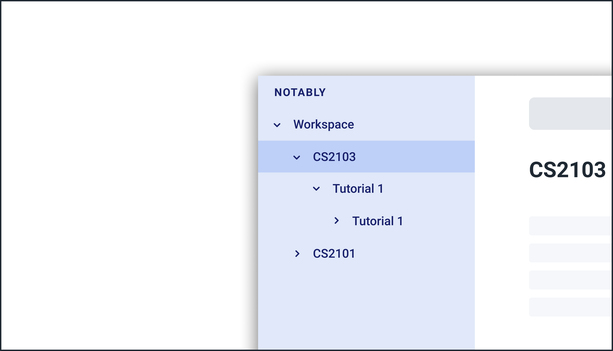
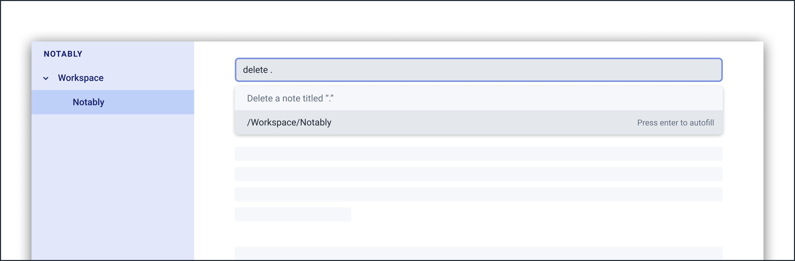

Overview
Notably is for those who prefer to use a desktop app for managing notes. More importantly, Notably is optimized for those who prefer to work with a Command Line Interface (CLI) while still having the benefits of a Graphical User Interface (GUI). If you can type fast, Notably can get your notes taken down faster than traditional GUI apps.
Summary of contributions
-
Major enhancement: added a tree data structure
-
What it does: allows the user to store their notes in a hierarchical form, similar to that of a file-folder structure in an Operating System
-
Justification: This feature allows for a more organised storage and access of notes. The design is based on the practice of users organising their physical notes in sections and divisions for clarity. A note (or referred to internally as a
Block) also doubles as a folder, allowing for a recursive data structure using only notes. As a result, this design has an added advantage of allowing for efficient navigation with the use ofPaths. -
Highlights: This enhancement is a complete rewrite of the data model while maintaining some design considerations from the previous iteration AB3. It required a lot of careful consideration about its design since it is the core feature of Notably. Also, the data structure would have to be observable to work seamlessly with the UI’s sidebar TreeView. It was time consuming to experiment with a few design options before settling on wrapping JavaFX’s TreeItem objects.
-
Credits:
-
-
Minor enhancement:
-
Refactored and created
Blockclass withTitleandBodyclasses -
Updated the
Storageto store and access JSON data which supports nestedBlocksas a result of the new Tree data structure -
Create sample Block data in the form of a first-time user tutorial walkthrough
-
-
Code contributed: [Functional code] [Test code]
-
Other contributions:
-
Project management:
-
Set up GitHub repository
-
Managed tags
v1.1andv1.3(2 tags) on GitHub
-
-
Enhancements to existing features:
-
Updated
UserPrefs
-
-
Documentation:
-
Improvements to UG command information: 306
-
Added section on tree data structure implementation and other improvements in DG
-
-
Community:
-
Contributions to the User Guide
Given below are sections I contributed to the User Guide. They showcase my ability to write documentation targeting end-users. |
Create a new note: new
If you want to add a new note (to the path of the currently open note), use the new command and specify the TITLE of the note.
Format: new -t TITLE [-o]
|
|
Creating duplicate notes
Creating duplicate notes are not allowed as mentioned 3.3. What are considered duplicate notes?
-
Two notes are considered duplicates IF their
TITLEsare the same while ignore their case. For example:-
Hello,hello,HELLOandHeLLoare considered duplicates -
hello world!,helloworld!andhelloworld@are not considered duplicates, because whitespaces and allowed symbols are not ignored
-
-
Two notes are considered duplicate IF they have the same
TITLEunder the same note. This can be seen in the following diagrams below: Figure 1. INVALID as there are duplicate notes under
Figure 1. INVALID as there are duplicate notes under/Workspace/CS2103Figure 2. VALID as they are not both directly under/Workspace/CS2103Figure 3. VALID as one exists in/Workspace/CS2103and the other in/Workspace/CS2101
Example: Creating new notes
-
Let’s first create a note (with a
TITLE), and open it immediately after. Type this command:new -t Notably -o
-
Due to the
-oflag, the currently open note is nowNotably(as seen in the sidebar). Let’s add a new note to the currently opened note, (Step 2) with aTITLEas follows:new -t CS2103T
-
The new note
CS2103Thas been created successfully!-
Observe that the note
CS2103Twas not opened immediately as seen in step 3-
This is because the
-oopen flag was not specified, so the noteCS2103Twas created without opening it immediately.
-
-

-o open flag)
-o open flag)
Delete a note: delete
If you no longer need a note, or if you have accidentally created a wrong note, don’t worry! You can always delete that note.
Format: delete [-t] AbsolutePath/RelativePath
|
|
|
Example: Deleting a note under the currently open note
-
Let’s delete the
Notablynote using this command:delete -t Notably
-
The currently open note is
Workspace -
The above example uses
RelativePath. You can achieve the same result as above by using anAbsolutePathinstead by executingdelete -t /Workspace/Notably.-
Not sure about
AbsolutePathandRelativePath? You can refer here for a clearer explanation
-
-
-
The note with the title
Notablyis deleted successfully since it exists!-
Another Note,CS2103andST2334are immediately deleted as well since they are notes underNotably
 Figure 7. Step 1 - Key in the example command
Figure 7. Step 1 - Key in the example command Figure 8. Final state after deletion
Figure 8. Final state after deletion -
Deleting the currently open note
-
In this example,
Notablyis the currently open note. Let’s delete it using the command:delete .
-
The
.in the command is aRelativePaththat points to the path of the currently open note
-
-
Notablynote is deleted and the currently open note is nowWorkspace-
This will change the currently open note to the deleted note’s parent note
Figure 9. Step 1 - Key in the example command
Figure 10. Final state after deletion -
Contributions to the Developer Guide
Given below are sections I contributed to the Developer Guide. They showcase my ability to write technical documentation and the technical depth of my contributions to the project. |
Model

API : Model.java
The Model,
-
stores and manipulates the
BlockTreedata that represents a tree of Blocks, through BlockModel -
stores and manipulates a list of suggestions based on the user’s input, through SuggestionModel
-
stores the current state of the
View, through ViewStateModel-
stores the command input given by the user, through CommandInputModel
-
stores the state of the
helpmodal being open, through HelpFlagModel -
stores the state of the current block’s
editmodal being open, through BlockEditFlagModel
-
-
stores
UserPrefdata that represents the user’s preferences, through UserPrefModel
BlockModel component
API : BlockModel.java
The BlockModel
-
stores and directly manipulates the
BlockTree-
contains a single
BlockTreeItemas theroot; the tree is built by adding chilrenBlockTreeItemsto theroot-
each
BlockTreeItemstores the reference to its parent and childrenBlockTreeItems, and its own content, throughTreeItem<Block>-
stores its content, through
Block-
contains the
TitleandBodycontent
-
-
-
-
Storage

API : Storage.java
The Storage component,
-
can save
UserPrefobjects in JSON format and read it back. -
can save Notably’s
BlockModeldata in JSON format and read it back.-
stores the
BlockTreeand also the path of the last openedBlock
-
Tree Data Structure
Notably aims to provide end user a neat and well-organized workspace to store their notes. This is done by creating a tree structure; allowing users to create folder-like paths to organize their notes and group them into categories to their own liking.
Rationale
While this can be done with a linear data structure (a simple list), a linear list of notes would require more work to establish the relationship between groups of notes. A tree data structure supports this better, giving a clearer distinction while also establishing a form of hierarchy (as seen in the design example below).
On top of that, observability must be ensured so that the UI can update with any changes that happen on the tree (and its nodes) and also the data within each node.

Current Implementation
A custom tree data structure that supports observability has been implemented. As seen here, the BlockModel is the entry of point of manipulating the data tree. The tree (referred to as BlockTree) is made up of tree nodes (referred to as BlockTreeItem). The tree is observable such that if any change occurs on any of the tree’s nodes, the change event will bubble upwards to the root node. Hence, the root node serves as the entry point for the BlockTree.
To achieve this design, a BlockTreeItem needs to contain 3 primary components:
-
an Observable reference to its parent
-
an ObservableList of its children
-
User’s note data (referred to as
Blockdata) consisting of:-
Titleof the note -
Bodycontent of the note (optional)
-
After multiple designs, the current implementation now has BlockTreeItem using an underlying TreeItem<Block> to handle the general behaviour of a tree node.
When manipulating the BlockTree, the execution of any operation is always split in this order:
-
Get the
currentlyOpenPathfrom the BlockModel -
BlockModel carries out the command required based on that
currentlyOpenPath
An example of an operation is new -t CS2103T. To execute this, the following sequence occurs:
-
NewCommandParsercreates theBlockthat has the title 'CS2103T' and a default empty body.-
The
TitleandBodyobjects are created as well
-
-
NewCommandthen calls the Model and in turn, the BlockModel to add thisBlockto the BlockTree -
BlockModelfirst obtains thecurrentlyOpenPathto execute the operation on, i.e in this case, to add the newBlockon the path -
BlockModelcallsBlockTreeto add theBlockto theAbsolutePathobtained fromBlockModel -
BlockTreecreates aBlockTreeItemusing theBlockparsed earlier. -
Subsequently, the underlying
TreeItem<Block>is created and theBlockTreeItemis then added to the BlockTree.
Below is a sequence diagram that demonstrates this example
Design Considerations
Aspect: Using JavaFX’s TreeItem<T> vs implementing a BlockTreeItem from scratch
Current choice: Using JavaFX’s TreeItem<T>
Pros:
-
seamless integration with JavaFX’s
TreeViewwhich is used in Notably’s sidebar to show the notes in a traditional file-browser-like manner -
TreeItem<T>has the requirements ofBlockTreeItem’sdesign already implemented to a usable extent -
conveniently handles underlying event handling required for
BlockTreeto be observable
Cons:
-
Implementation still requires wrapping and unwrapping of underlying
TreeItem<T>to work withTreeView
Aspect: BlockTreeItem vs Folders to represent path structure
Current choice: BlockTreeItem
Pros:
-
No need for an additional class. Having a separate
folderobject would also require a separate UI View since folders should not contain any block data.
Cons:
-
Somewhat unconventional design. User might be unfamiliar with the intention on first use, without proper explanation
Aspect: Root should also be a BlockTreeItem
Pros:
-
Seamless transition to JSON storage
Cons:
-
Need to add constraint to ensure that the root
BlockTreeItemdoes not contain anyBodyand is also unmodifiable